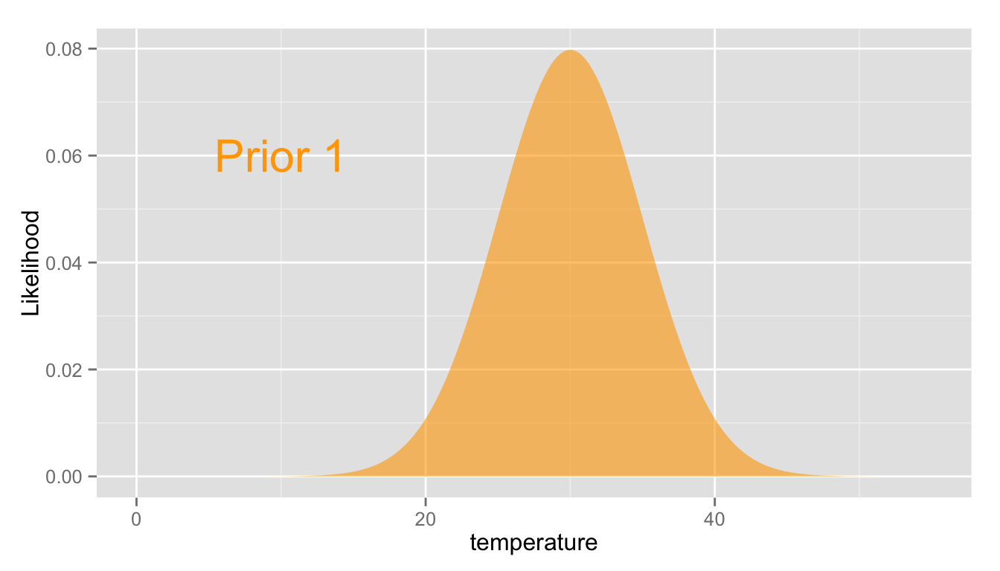
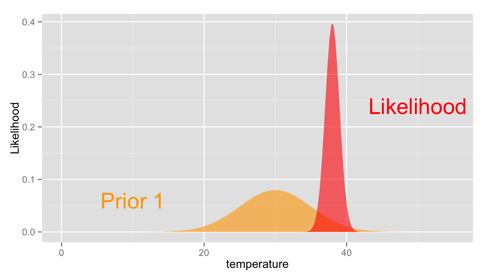
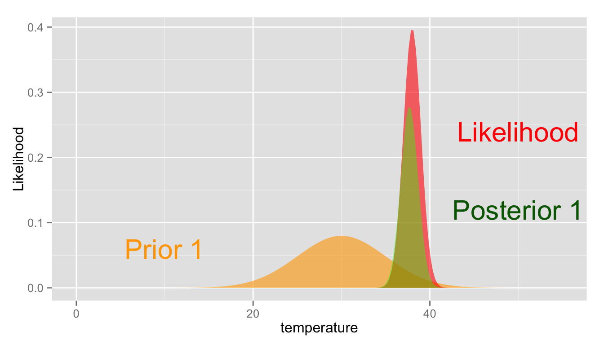
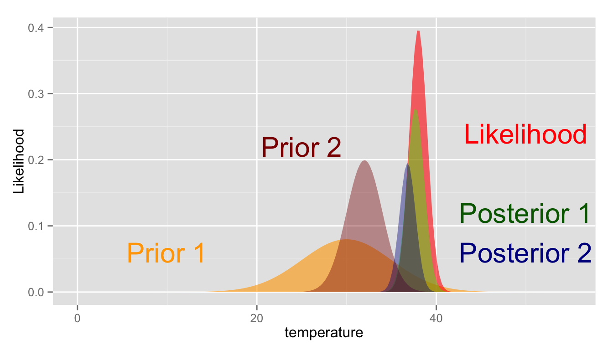

A Short Tutorial
Instructions:
Longer chapters require you to scroll to see more details.
Kevin Smith | Homework 3 | Big Data Analytics
Example: Assume for model \(M_1\) the researchers report \(t_{p,1} = 30\) and \(\sigma_{p,1} = 5\)
In R:
predicted.mean.1 = 30
predicted.sd.1 = 5
prior.M1 <- function(temperature){
dnorm(temperature,
mean = predicted.mean.1,
sd = predicted.sd.1)
}Plot the prior beliefs for model \(M_1\):
require(ggplot2)Create a range of temperatures to evaluate:
range <- data.frame(temperature = seq(0, 55, length.out = 200))Create the base layer:
g <- ggplot()Add a layer for the prior bliefs about \(t\) under model \(M_1\):
g <- g +
geom_ribbon(data = range,
aes(x = temperature, ymin = 0,
ymax = prior.M1(temperature)),
fill = "orange", alpha = 0.6)Add label layer and render the graphics:
g <- g + geom_text(aes(x = 10, y = 0.06,
label = "Prior 1"),
color = "orange", size = 8) + ylab("Likelihood")
g
What is the likelihood of measuring \(t_{m}\) assuming normally distributed measurement errors with standard deviation \(\sigma_{m}\) about the true value \(t\)?
Recall:
The probability density function for the measurement \(t_m\) given the true value \(t\) and thermometer parameters is:
Since only one measurement was taken, the likelihood function of the true parameter \(t\) given the measured temperature \(t_m\) and the thermometer parameters \(\sigma_t\) are equivalent:
Example: Assume the measured temperature of the bath \(t = 38\) and that the thermometer has \(\sigma_{m} = 1\):
sample.temperature = 38
measurement.error = 1The probability of obtaining a temperature measurement \(t_m\) from a bath of temperature \(t\) can be written equivalently as the likelihood of obtaining the true temperature \(t\) from an instrument that measures \(t_m\) with \(\sigma_{m} = 1\):
likelihood <- function(temperature){
dnorm(temperature, mean = sample.temperature, sd = measurement.error)
}The plot from the preceeding page can be updated:
g <- g +
geom_ribbon(data = range,
aes(x = temperature, ymin = 0,
ymax = likelihood(temperature)),
fill = "red", alpha = 0.6) +
geom_text(aes(x = 50, y = 0.24,
label = "Likelihood"),
color = "red", size = 8)
g
Query: Given both our prior beliefs (\(M_1\)) and the likelihood of obtaining the observed data \(t_{m}\), what is the probability the temperature of the bath is \(t\)?
where \(t_{c}\) is the is the most probable value of \(t\) under \(\tilde{P}\), given by:
and \(\sigma_{c}\) is the standard deviation of \(t\) under \(\tilde{P}\), given by:
Example:
posterior <- function(temperature, prior, scale.factor){
scale.factor * prior(temperature) * likelihood(temperature)
}g <- g +
geom_ribbon(data = range,
aes(x = temperature, ymin = 0,
ymax = posterior(temperature, prior.M1, 30)),
fill = "green", alpha = 0.4) +
geom_text(aes(x = 50, y = 0.12,
label = "Posterior 1"),
color = "darkgreen", size = 8)
g
So only one set of prior beliefs, captured in \(M_1\), \(t_{p,1}\) and \(\sigma_{p,1}\), has been considered. How can multiple sets of prior beliefs be compared?
Example: Assume for model \(M_2\) the researchers report \(t_{p,2} = 32\) and \(\sigma_{p,2} = 2\)
In R:
predicted.mean.2 = 32
predicted.sd.2 = 2
prior.M2 <- function(temperature){
dnorm(temperature,
mean = predicted.mean.2,
sd = predicted.sd.2)
}g <- g +
geom_ribbon(data = range,
aes(x = temperature, ymin = 0,
ymax = prior.M2(temperature)),
fill = "darkred", alpha = 0.4) +
geom_text(aes(x = 25, y = 0.22,
label = "Prior 2"),
color = "darkred", size = 8) +
geom_ribbon(data = range,
aes(x = temperature, ymin = 0,
ymax = posterior(temperature, prior.M2, 90)),
fill = "darkblue", alpha = 0.4) +
geom_text(aes(x = 50, y = 0.06,
label = "Posterior 2"),
color = "darkblue", size = 8)
g
N.B. Remember that the posteriors are not normalized, so their respective maximum values cannot be compared directly.
The plot is getting a bit cluttered, but a close examination will reveal that as \(\sigma_{p, i}\) decreases, the most probable posterior value of \(t_{c, i}\) shifts towards the most probable value of the prior \(t_{p, i}\).
More precisely since \(\sigma_{p, 2} \lt \sigma_{p, 1}\), it follows that \(t_{p, 2}\) is closer to \(t_{c, 2}\) than \(t_{p, 1}\) is to \(t_{c, 1}\). However it does not follow that a smaller \(\sigma_{p, i}\) results in a better model.
Indeed, compared to \(M_2\), \(M_1\) is more adept at predicting \(t\) in the probable range of the data \(t_m\), given the thermometer parameters. Qualitatively, this is shown by the overlap of the Likelihood function to Priors 1 and 2. For a quantitative assessment, the probability of obtaining data \(t_m\) under \(M_i\) should be compared for each \(i\).
This is given by the integral of the integral of the marginal joint probability of \(t_m\) and \(t\) given \(M_i\), \(t_{p, i}\), \(\sigma_{p, i}\), and \(\sigma_m\) over all possible values of \(t\). That is:
The factor \(\frac{(t_m - t_{p, i})^2}{(\sigma_m^2 + \sigma_{p, i}^2)}\) is a measure of the model’s inaccuracy. Increasing (↑) the variability in model output \(\sigma_{p, i}\) leads to a decrease (↓) in the inaccuracy of prediction and in turn an increase (↑) in the overall probability of measuring \(t_m\).
On the other hand, the factor \(\frac{1}{\sqrt(\sigma_m^2 + \sigma_{p, i}^2)}\) is a measure of the model’s precision. Increasing (↑) the variability in model output \(\sigma_{p, i}\) leads to a decrease (↓) in the precision of prediction and in turn a decrease (↓) in the overall probability of measuring \(t_m\).
Therefore, Bayesian model comparison inherently invokes a trade-off between a model’s precision and its ability to generalize. According to some authors, (e.g. Leroy 1998 and MacKay 1992), this is the embodiment of Occam’s razor:
Non sunt multiplicanda entia sine necessitate.
‘Entities must not be multiplied beyond necessity.’ - Occam’s razor.
| K | Strength of Evidence for \(M_1\) |
|---|---|
| < 1 | Negative |
| 1 - 3 | Barely Worth Mentioning |
| 3 - 10 | Substantial |
| 10 - 30 | Strong |
| 30 - 100 |
Very Strong |
| > 100 | Decisive |
evidence.for.m1 = dnorm(sample.temperature,
mean = predicted.mean.1,
sd = measurement.error + predicted.sd.1
)
evidence.for.m2 = dnorm(sample.temperature,
mean = predicted.mean.2,
sd = measurement.error + predicted.sd.2
)
K = evidence.for.m1 / evidence.for.m2The value for K in our example is 1.52. So \(M_1\) is slightly preferred over \(M_2\) even though \(M_2\) is more precise. However the strength of the evidence is ‘barely worth mentioning’ so we will end our analysis here.
D. J. C. MacKay, “Bayesian interpolation,” Neural computation, vol. 4, no. 3, pp. 415–447, 1992.
S. S. Leroy, “Detecting climate signals: Some Bayesian aspects,” Journal of climate, vol. 11, no. 4, pp. 640–651, 1998.
H. Jeffreys, Theory of probability, 3rd ed. Oxford [Oxfordshire]: New York: Clarendon Press; Oxford University Press, 1998.
R version 3.1.2 (2014-10-31)
Platform: x86_64-apple-darwin13.4.0 (64-bit)
locale:
attached base packages: [1] “stats, graphics, grDevices, utils, datasets, methods and base” attr(,“class”) [1] “knit_asis” attr(,“knit_cacheable”) [1] TRUE
other attached packages: [1] “pander(v.0.5.1), ggplot2(v.1.0.0) and knitr(v.1.8)” attr(,“class”) [1] “knit_asis” attr(,“knit_cacheable”) [1] TRUE
loaded via a namespace (and not attached): [1] “colorspace(v.1.2-4), digest(v.0.6.4), evaluate(v.0.5.5), formatR(v.1.0), grid(v.3.1.2), gtable(v.0.1.2), htmltools(v.0.2.6), labeling(v.0.3), MASS(v.7.3-35), munsell(v.0.4.2), plyr(v.1.8.1), proto(v.0.3-10), Rcpp(v.0.11.3), reshape2(v.1.4.1), rmarkdown(v.0.3.10), scales(v.0.2.4), stringr(v.0.6.2), tools(v.3.1.2) and yaml(v.2.1.13)” attr(,“class”) [1] “knit_asis” attr(,“knit_cacheable”) [1] TRUE